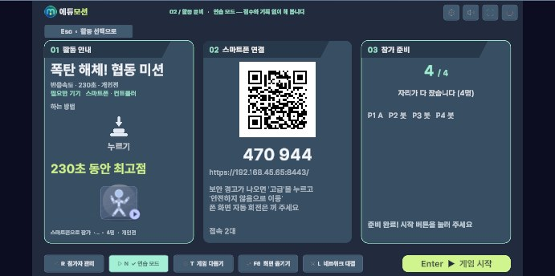
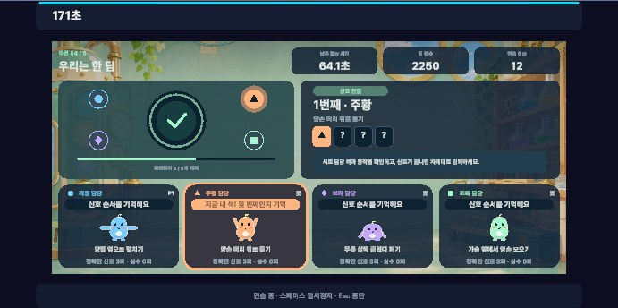

G009 폭탄 해체! 협동 미션 — C# 이식 확인
HTML 게임 「폭탄 해체! 협동 미션」(G009 v1.1, 회원님이 주신 HTML 파일)을 이 저장소의 C# 틀(판정 → 감독 → 무대)로 옮겼습니다. 네 가지 색 신호를 딱 한 번 보고 기억해, 네 역할이 순서대로 자기 동작을 한 뒤 입력해 잠금장치를 푸는 4인 협동 게임입니다. 회원님 결정대로 입력만 키보드 → 폰·컨트롤러 단추로 바꾸고 나머지는 모두 원본대로 옮겼습니다. 주개발자 게임과 같은 흐름(참가 → 동작 연습 → 시작)을 넣었고, 앱 「웹 게임」에 붙여 넣는 HTML 판도 함께 올렸습니다. 새 파일만 더했고 기존 파일은 고치지 않았습니다.
브랜치 열기 · 기준과 비교 · PR #106 · 진행 기록
변환 기록
- 2026-11-26 23:40병합 전 테스트 실행본 — PR #138 가지 acad5fb로 맥에서 Windows 실행본을 만듦(392MB 출시 빌드, 3D 캐릭터·재질 들어감 확인). 포털 실행 보조 프로그램은 Windows에서만 만들 수 있어 빠짐. 실물 폰·카메라·Windows 실행은 미확인 — 주개발자께 PR 댓글로 알림PR #138
- 2026-11-26 22:30앱에서 다시 확인(맥 에디터 · 흉내 장치, 연습 판) — ⚠️ 문제: 정원 4·최소 4·봇 채우기라, 첫 아이가 참가하자마자 로비에서 봇 3이 자리를 채움(TeamBots.Tick). 정원 셈에 봇이 들어가(ParticipantRoster.IsFull) 두 번째 아이부터 참가하지 못함(SessionRunner 「!Roster.IsFull」). 흉내 폰 B가 실제로 막힘. 교실에서 4명이 폰을 들면 1명 + 봇 3으로만 시작됨. / 폰 A + 봇 셋: 자기 역할 차례에 0.4초 꾹 누르면 「맞음」, 봇과 함께 폭탄 2개 해체(틀림 0). 짧게 톡(0.12초)은 「누르기」로 안 들어감 — 안내대로 길게 눌러야 함.PR #138
- 2026-11-22 21:40수정 요청 반영 — 연습 화면에 「이 게임은 이렇게 해요」 세 줄(신호 순서 기억 → 내 색 차례에 동작 + 단추 → 틀리면 3초 줄고 다시), 경기 중 카드마다 「지금 할 일」 한 줄, 미션이 바뀔 때 안내. 규칙·점수는 그대로. 「게임이 없다」는 업데이트로 해결PR #130
- 2026-11-17 20:01HTML 판(붙여넣기용)도 원본 형식 그대로 — 입력이 단추라 웹 통로로도 같은 규칙을 옮길 수 있다(설정은 기본값 90초·5단계·4개 고정). 앱 웹 게임 검사기 통과, 앱 안 실행(Windows)은 못 함PR #106
- 2026-11-17 20:01처음 변환 — 회원님 「입력 부분 제외하고는 모두 원본대로」: 4인 4역할·신호 한 번만·입력 때만 제한 시간·잠금장치 3·5·7·신호 4·6·8·점수 모두 원본 그대로, 입력만 키보드 → 자기 폰·컨트롤러 단추. 모자란 역할은 앱 봇이 원본 시범 모드처럼 저절로 누르고, 팀 점수는 모두에게 같게. 참가 → 동작 연습(내 역할 확인) → 3초 → 경기PR #106
흐름 — 참가 → 동작 연습 → 시작
| 단계 | 누가 | 무엇 |
|---|---|---|
| 1. 참가 화면 | 앱(그대로) | 폰·컨트롤러로 4명 참가. 모자라면 앱 봇이 빈 역할을 채웁니다(botFill) |
| 2. 입장 뒤 동작 연습 | 이 게임(CoopMissionPractice) | 「내 역할 확인」 — 원본 첫 화면의 역할 카드(색·동작·키)를 한 번 해 보기. 저마다 자기 역할 동작을 하고 단추를 한 번 누릅니다. 참가자 전원(봇은 바로 통과)이 누르면 「잘했어요!」 0.8초 뒤 시작. 선생님은 앱의 「바로 시작」/Enter. |
| 3. 게임 시작 | 앱 3초 세기 → 이 게임 | 작전 준비 3초 → 신호를 한 번만(하나 1.1초) → 협동 입력 → 단계 성공 2.5초를 잠금장치 수만큼. 다 풀거나 시간이 다 되면 앱이 경기를 닫고 결과 화면 |
폰 게임이라 카메라 게임의 「시작 자세」(두 팔 ㄴ자)는 없습니다. 원본에 없는 시작 동작은 지어내지 않았습니다.
직접 해 보기
C# 판정과 같은 규칙과 숫자로 움직입니다. 원본 키 그대로 A·S·K·L이 파랑·주황·보라·초록 담당의 단추입니다(앱에서는 각자의 폰·컨트롤러 단추). 키보드로 하지 않는 역할은 앱 봇처럼 원본 「혼자 시범 보기」의 가상 입력으로 저절로 맞게 누릅니다. 「키보드 0명」이면 원본 시범 모드와 같습니다. Enter는 선생님의 「바로 시작」.
폭탄 해체! 협동 미션
신호를 보고, 내 차례를 기다리고, 정확하게 반응해요. 네 가지 색 신호를 연결해 가상 장치를 안정화하세요! (실제 해체 방법과 관계없는 색 신호 협동 게임입니다.)
- 각 단계의 신호는 처음에 한 번만 보여 줘요. 입력할 때는 정답이 숨겨져요.
- 내 색 차례가 되면 내 동작을 하고 단추를 한 번 눌러요.
- 시범·준비·단계 결과 중에는 제한 시간이 줄지 않아요.
- 잘못 누르면 남은 시간 −3초, 현재 신호부터 다시 도전해요.
우리 팀 작전 설정
안전 자리에서 안전하게 할 수 있는 동작으로 · 옆 사람과 간격 · 동작은 선생님이 관찰
HTML 판 — 원본 형식 그대로 함께 올렸습니다
주개발자 요청(「HTML·유니티 둘 다 올려 보라」)대로, 앱의 「AI로 게임 만들기 → HTML 붙여넣기」에 그대로 넣으면 도는 HTML 한 파일도 같은 PR에 넣었습니다: docs/progress/g009-coop-mission-web/game.html(설명 README). 이 게임은 입력이 단추라 웹 통로로도 원본 규칙을 그대로 옮길 수 있습니다(회원님 「이것도 원본 형식을 토대로 제작」).
| Unity C# 판(앱 내장) | HTML 판(붙여넣기용) | |
|---|---|---|
| 규칙·숫자 | 같다 — 원본 v1.1(신호 한 번만, 입력 때만 시간이 줌, 맞힘 100 + 연속 보너스, 단계 +200, 틀리면 −3초) | |
| 입력 | 자기 폰·컨트롤러 단추(Press). 사람이 없는 역할은 원본 시범 모드의 가상 입력 | |
| 설정 | 규칙 파일 칸(60·90·120초, 3·5·7단계, 4·6·8개) | 기본값 고정(90초 · 5단계 · 4개) — 웹 게임에는 설정 칸이 넘어오지 않는다 |
| 동작 연습 | 있음(내 역할 확인) | 없음 — 앱이 시작을 알리면 바로 작전 준비 |
- 통과 앱이 붙여 넣은 HTML에 거는 검사기(
WebGameLint.Check규약 ·FindClassroomHazards교실 위험 ·WebGameImport바깥 주소)를 맥 Unity에서 돌려 문제 0건. - 끝까지
dfz대역 위에서 60·120Hz로 한 판을 돌려 끝 알림(dfz.finish)이 한 번 오는 것을 봤습니다. - 안 함 앱 안 격리 브라우저에서 실제 실행 — 그 엔진이 Windows 전용이라 맥에서는 못 돌립니다.
원본 HTML판에서 달라진 것 — 입력만
| 원본 HTML판 | 앱판(C#) | 까닭 |
|---|---|---|
| 자기 동작 뒤 담당 키 A·S·K·L(또는 화면 단추) | 자기 폰·컨트롤러 단추. 동작은 그대로 교사가 봄 | 회원님 결정 — 앱에 키보드 4인 입력이 없다 |
| 역할 = 키(P1~P4) | 역할 = 참가 차례 | 같은 뜻 |
| 「혼자 시범 보기」(가상 입력) | 사람이 없는 역할(봇·빈자리)이 같은 가상 입력 | 원본 4인 고정 — 모자란 자리는 앱 봇, 봇 행동이 곧 원본 시범 입력 |
| 단계 성공 뒤 선생님 「다음 잠금장치 →」 | 2.5초 뒤 저절로(원본 시범 모드와 같게) | 앱에 선생님 단추가 없다 |
| 팀 점수 하나 | 오른 팀 점수를 모두에게 같은 점수로 — 순위 없음 | 앱은 사람마다 점수. 원본에 개인 점수가 없다 |
| 팀 이름 입력 칸 | 「우리는 한 팀」(원본 기본값) | 앱 화면에 글 입력이 없다 |
| 결과 화면 · txt 저장 | 신호 판에 결과(단계·정확도·최고 콤보) + 카드마다 역할별 성공/실수, 앱 결과판 | 앱 공통 |
| 남색 바탕 | 배경 그림(밝은 협동 미션 연구소, GPT) 위에 원본 남색 판 | 게임마다 다른 밝은 장면 |
그대로 옮긴 것: 4인 4역할(색·기호·동작), 제한 시간 60·90·120초(입력 단계에서만 줄어듦), 잠금장치 3·5·7단계, 신호 4·6·8개, 신호 순서(네 역할을 한 번씩 섞고 바로 앞과 다른 역할을 붙임), 작전 준비 3초, 신호 하나 1.1초, 입력 중 정답 숨김, 시범·대기 중 입력 무시, 맞히면 100 + min(연속 − 1, 5) × 10, 단계 성공 +200·2.5초(시간 정지), 틀리면 −3초·연속 끊김·같은 신호부터 다시, 시간 0이면 실패, 화면 문구.
새 파일
| 파일 | 무엇 |
|---|
앱에서 해 본 것 (2026-11-26 · 다시 확인)
맥 Unity 에디터 SessionTest Play, 가지 claude/fixes-1126(PR #138)에 최신 main을 합친 55aa86e, 연습 판(기록·순위에 안 올림). 폰은 실물이 아니라 앱이 여는 폰 페이지를 브라우저로 열고 W3C 정의대로 기울기·중력 값과 누르기를 넣었습니다(폰 페이지 → 폰 서버 → 해석기 → 판정은 실제 코드).
- ⚠️ 문제: 정원 4·최소 4·봇 채우기라, 첫 아이가 참가하자마자 로비에서 봇 3이 자리를 채움(
TeamBots.Tick). 정원 셈에 봇이 들어가(ParticipantRoster.IsFull) 두 번째 아이부터 참가하지 못함(SessionRunner「!Roster.IsFull」). 흉내 폰 B가 실제로 막힘. 교실에서 4명이 폰을 들면 1명 + 봇 3으로만 시작됨. - 폰 A + 봇 셋: 자기 역할 차례에 0.4초 꾹 누르면 「맞음」, 봇과 함께 폭탄 2개 해체(틀림 0). 짧게 톡(0.12초)은 「누르기」로 안 들어감 — 안내대로 길게 눌러야 함.


검증한 것과 안 한 것
- Unity 맥 Unity 6000.5.9f1, 빌드 대상 Win64(학교 PC와 같은 조건)로 가지를 받아 컴파일 오류 0, G009 EditMode 검사 40건 모두 통과(골라 돌림 — 전체 검사는 아님).
- .NET 같은 40건을 .NET 8·C# 9·경고를 오류로·NUnit 3.14로도 돌렸습니다(main의 실제 파일과 함께 묶음).
- 빨간불 확인 판정·연습·감독·무대 규칙 47개를 하나씩 끄면 모두 검사가 실패합니다. 처음엔 7개가 구멍이라 검사 4건을 더했고, 하는 일이 없던 조건 둘은 지웠습니다. 결과가 같아 검사로 가를 수 없는 갈래 하나는 진행 기록에 적었습니다.
- HTML 판 앱 웹 게임 검사기 통과(위 절).
- 안 함 앱 화면 촬영(앱에 아직 연결 전이라 앱 화면이 없음), 실물 폰으로 한 판(만든 분들이 확인 — PR #100에서 주개발자께 문의 중), Windows 실행.
앱에 붙이려면
- 규칙:
FlowType맨 뒤에CoopMission,FlowTypes.IsMovedHtmlGame,FlowSpec·검증기·스키마에coopMissionSeconds(60·90·120)·coopMissionRounds(3·5·7)·coopMissionLength(4·6·8). 값은CoopMissionSettings.From(...)로 감독에. - 봇:
BotFill.Supports에FlowType.CoopMission(봇 행동은 판 안에 있음). - 연습: 안내 단계(
SessionState.Intro)에서 이 게임이면 안내 카드 대신 감독 연습 —BeginPractice, 장면마다SyncRoster→ 입력HandleInput→TickPractice→ 무대SyncPractice.PracticeStartRequested면RequestSkipIntro(). - 경기:
UguiNativeActivities에서SyncRoster→HandleInput→Tick(경기 시간, 판)→ 무대Sync.Award는HandleActivityInput으로,Finished면runner.CompleteCourse(now). - 그림:
stage.Backdrop = _hud.StageArt; - 출시:
StreamingAssets/games/g009-coop-mission/ruleset.json와assets/images,GameTitles.FolderById, 표지, 말 표(coopMission.*, 진행 기록에 ko·en).
실물에서 봐 주셨으면 하는 것
- 폰·컨트롤러 단추가 한 번 누를 때 한 번만 오는지(원본은 「키를 떼고 다시 누르기」). 두 번 오면 두 번째가 틀린 입력으로 −3초가 됩니다.
- 동작은 원본처럼 교사가 봅니다 — 단추만 눌러도 맞힘이 됩니다. 학생에게 「동작 후 단추」를 미리 약속시켜 주세요.
- 4명 미만일 때 봇 역할이 저절로 눌러 주는 속도(0.85·0.9초)가 사람 차례와 섞여 자연스러운지.